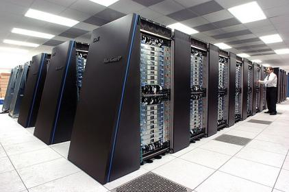
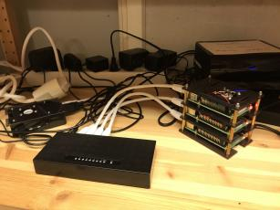

Overview¶
Goals
- See the bigger picture UPPMAX is part of
- See other UPPMAX systems
- First understanding why Bianca is how she is
Notes for teachers
Teaching goals:
- The learners demonstrate to have heard about NAISS
- The learners demonstrate to have heard about UPPMAX
- The learners demonstrate to have a first understanding why Bianca is like she is
Schedule (45 minutes):
- 5 minutes: summarize page, start exercise
- 30 minutes: let learners do exercise
- 10 minutes: feedback
The bigger picture¶
Here we place UPPMAX within the bigger, national, picture, starting from the biggest source of money for research in Sweden.

Vetenskapsrådet ('Science counsel', VR) is biggest funder of research in Sweden and funds the national HPC infrastructure.

The National Academic Infrastructure for Supercomputing in Sweden (NAISS) provides such HPC infrastructure: computing power, storage and data services. Applications for these resources starts at the SUPR homepage. These resources are physically located in multiple places in Sweden, among other Uppsala.

Uppsala Multidisciplinary Center for Advanced Computational Science (UPPMAX = UppMACS) provides the HPC infrastructure that is physically located in Uppsala. Part of this is to provide training and support.
flowchart TD
HPC_Sweden(HPC in Sweden)
HPC_others(HPC in other cities)
HPC_Uppsala(HPC in Uppsala)
NAISS(NAISS)
UPPMAX(UPPMAX)
UU(Uppsala University)
Users(Users)
VR(Vetenskapsrådet)
VR --> |money| HPC_Sweden
HPC_Sweden -->|done by| NAISS
NAISS --> |money| HPC_others
NAISS --> |money| HPC_Uppsala
HPC_Uppsala -->|done by| UPPMAX
UU -->|money| HPC_Uppsala
Users -->|apply for HPC|NAISSUPPMAX systems¶
Here we place Bianca between the other UPPMAX systems.
There are three types of UPPMAX systems:
- Computing systems
- Storage systems
- Cloud services
UPPMAX computing systems¶
Computing systems allow a user to do heavier computational calculations.
UPPMAX has, among others, the following clusters:
- Rackham: regular data, general purpose
- Snowy: regular data, long runs and GPU:s
- Bianca: for sensitive data, general use
- Miarka: for sensitive data, SciLifeLab-only
A technical summary can be found below.
flowchart TD
UPPMAX(Which UPPMAX cluster?)
Bianca
Rackham
Miarka
Snowy
is_sensitive{Do you use sensitive data?}
is_scilifelab{Do you work at SciLifeLab?}
is_long{Do you use long runs and/or GPUs?}
UPPMAX --> is_sensitive
is_sensitive --> |yes|is_scilifelab
is_scilifelab --> |yes|Miarka
is_scilifelab --> |no|Bianca
is_sensitive --> |no|is_long
is_long --> |no|Rackham
is_long --> |yes|SnowyUPPMAX storage systems¶
Storage systems allow a user to storage (big amounts of) data, for either active use (i.e. in calculations) or to archive it. Storage for active use is also called 'on-load' storage, where archived data is called 'off-load' storage.
The UPPMAX storage systems are:
- On-load: Castor for Bianca, Crex for Rackham
- Off-load: Lutra for Rackham
flowchart TD
UPPMAX(Which UPPMAX storage system?)
which_cluster{Which UPPMAX cluster?}
Castor
Lutra
usage_type{Type of use?}
UPPMAX-->which_cluster
which_cluster-->|Rackham|usage_type
which_cluster-->|Bianca|Castor
usage_type-->|on-load|Crex
usage_type-->|off-load|LutraUPPMAX Cloud services¶
Cloud services allow a user to have something active (typically a website) that can be accessed by the internet.
For this, the UPPMAX cloud
has a service called 'Dis' (the Swedish word for 'haze') and is part of
the EAST-1 region of the SNIC science cloud.
Bianca¶
Here we describe what Bianca is, where her name comes from, and the ideas behind her design.
Bianca's name¶
Bianca, like all clusters at UPPMAX, is named after a Tintin character, in this case after Bianca Castafiore.

Bianca's design¶
Bianca is an high-performance computing (HPC) cluster for sensitive data.
Or: Bianca is a group of computers that can effectively run many calculations, as requested by multiple people, at the same time. As the data is sensitive, it is protected to remain only on Bianca.
Bianca is designed to
- Protect the sensitive data:
- (1a) Accidental data leaks should be difficult
- (1b) Law: if data is leaked, the person doing so should be possibly identified
- Emulate a standard HPC cluster environment:
- (2a) Use the hardware as efficient as possible
- (2b) Distributes shared resources (CPU, memory) in a fair way
- (2c) make correct data management as easy as possible
Bianca runs the Linux operating system and all users need some basic Linux knowledge to use her.
Using Linux
Using Linux (and especially the so-called command-line/terminal) is essential to use Bianca. Learning the essential Linux commands is part of this course.
Difference between supercomputer and (high-performing) computer cluster¶

A supercomputer is a machine that is optimized for doing calculations quickly. For example, to predict the weather for tomorrow, the calculation may not take a week. The image above is a supercomputer.

A computer cluster is a machine that is optimized for doing a lot of calculations. The image above shows a home-made computer cluster. This home-made computer cluster may not be suitable for high-performance.
The image above shows Rackham, another UPPMAX computer cluster, suitable for high-performance computing. This makes Rackham an high-performance computing (HPC) cluster. Bianca and Rackham are HPC clusters.
Restrictions on a computer cluster¶
A computer cluster is a group of computers that can run many calculations, as requested by multiple people, at the same time.
To ensure fair use of this shared resource, regular users are restricted in some ways:
- Users cannot run calculations directly. Instead, users need to request either (1) a calculation to be run, or (2) an interactive node
Requesting a calculation to run
Requesting a calculation to run is part of this course. This is done by using the SLURM scheduler.
Requesting an interactive node
Requesting an interactive node is part of this course. This is done by requesting an interactive node from the SLURM scheduler.
- Users cannot install software directly. Instead, users need to use pre-installed software or learn techniques how to run custom software anyway
Using pre-installed software
Using pre-installed software is part of this course. This is done by using the module system.
How to run custom software
Techniques how to run custom software is not part of this course. Instead, one technique is part of the intermediate Bianca course and can be found in the extra course materials on containers.
These restrictions apply to most general-purpose clusters. However, Bianca is a sensitive data cluster, to which more restrictions apply.
Restrictions on a sensitive data computer cluster¶
Next to the general restrictions above, Bianca also is a sensitive data cluster. This sensitive data must be protected to remain only on Bianca, due to which there are these additional restrictions to users:
- Users have no direct access to internet. Instead, users can up/download files from/to a special folder.
File transfer
Transferring file is part of this course. This is done using FileZilla.
The goal is not to prevent the up/download of sensitive data, instead it is to prevent the accidental up/download of sensitive data. As these up/downloads are monitored, in case of an accident, the extent of the leak and the person (accidentally) causing it is known. Identifying a responsible person in case of such an accident is required by law.
What is a computer cluster technically?¶
A computer cluster is a machine that consists out of many computers. These computers work together.
Each computer of a cluster is called a node.
There are three types of nodes:
- login nodes: nodes where a user enters and interacts with the system
Logging in
Log in to Bianca is part of this course.
- calculation nodes: nodes that do the calculations
Requesting a calculation to run
Requesting a calculation to run is part of this course. This is done by using the SLURM scheduler.
- interactive nodes: a type of calculation node, where a user can do calculations directly
Requesting an interactive node
Requesting an interactive node is part of this course. This is done by requesting an interactive node from the SLURM scheduler.
Each node contains several CPU/GPU cores, RAM and local storage space.
A user logs in to a login node via the Internet.
Summary¶
keypoints
- NAISS provides HPC resources for Swedish research.
- UPPMAX takes care of the Uppsala HPC facilities
- Bianca is an HPC cluster for sensitive data
- The restrictions on Bianca follow from Bianca being a shared resource that uses sensitive data
Questions¶
1. Your want to request access to general-purpose HPC. At which website does your journey start?
Either a search engine to google for 'NAISS', or directly https://naiss.se
2. Your colleague visits https://bianca.uppmax.uu.se/ and sees nothing appear. What is likely the problem?
He/she is not inside of SUNET.
Logging in is part of this course.
3. You want to use a piece of software that came out this morning (!) on Bianca. Will you be able to? Why?
This will likely fail, as it is not a pre-installed piece of software.
If you are more advanced, there are ways to get it running yourself. For example, one technique -using containers- is part of the intermediate Bianca course and can be found described at this course's extra page on 'Containers'.
4. You want to use an online tool to do a calculation on Bianca. Will this work? Why?
This will fail, because Bianca has (close to) no internet access.
5. Your colleague finds out that one can run scripts with calculations directly on the login node. This saves him/her much time waiting for a calculation to start. Is this OK and why?
For that colleague, there seems to be no problem. However, for everyone else this is a problem, as the login node is a shared node.
The colleague will be asked to schedule his/her jobs instead. This is usually done by an email from the UPPMAX staff.
Requesting a calculation to run is part of this course. This is done by using the SLURM scheduler.
6. You are developing code on Bianca. You write the code line-by-line and schedule a test run after each addition. However, after each new line, it takes a couple of minutes before you know your code worked yes/no. How could you develop your code quicker?
This is the typical use-case to use an interactive node. One could also consider to develop code on a local computer instead (which uses nonsensitive/simulated/fake testing data) and upload the final code instead.
Requesting an interactive node is part of this course. This is done by requesting an interactive node from the SLURM scheduler.
7. Your script downloads a human reference genome from a secure website. Will this work on Bianca? Why?
This will fail, because Bianca has (close to) no internet access.
8. You have a problem on Bianca that is too hard to solve. Where do you ask us for help?
Google for 'UPPMAX support' or directly go to https://www.uppmax.uu.se/support.
Extra material¶
UPPMAX clusters technical summary¶
| Rackham | Snowy | Bianca | |
|---|---|---|---|
| Purpose | General-purpose | General-purpose | Sensitive |
| # Intel CPU Nodes | 486+144 | 228 | 288 |
| # GPU Nodes | - | 50, Nvidia T4 | 10, 2x Nvidia A100 each |
| Cores per node | 20/16 | 16 | 16/64 |
| Memory per node | 128 GB | 128 GB | 128 GB |
| Fat nodes | 256 GB & 1 TB | 256, 512 GB & 4 TB | 256 & 512 GB |
| Local disk (scratch) | 2/3 TB | 4 TB | 4 TB |
| Login nodes | Yes | No (reached from Rackham) | Yes (2 cores and 15 GB) |
| "Home" storage | Domus | Domus | Castor |
| "Project" Storage | Crex, Lutra | Crex, Lutra | Castor |
Detailed overview of the UPPMAX systems¶
graph TB
Node1 -- interactive --> SubGraph2Flow
Node1 -- sbatch --> SubGraph2Flow
subgraph "Snowy"
SubGraph2Flow(calculation nodes)
end
thinlinc -- usr-sensXXX + 2FA + VPN ----> SubGraph1Flow
terminal -- usr --> Node1
terminal -- usr-sensXXX + 2FA + VPN ----> SubGraph1Flow
Node1 -- usr-sensXXX + 2FA + no VPN ----> SubGraph1Flow
subgraph "Bianca"
SubGraph1Flow(Bianca login) -- usr+passwd --> private(private cluster)
private -- interactive --> calcB(calculation nodes)
private -- sbatch --> calcB
end
subgraph "Rackham"
Node1[Login] -- interactive --> Node2[calculation nodes]
Node1 -- sbatch --> Node2
end